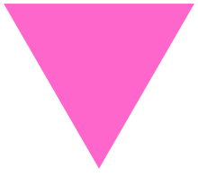

A pink triangle has been a symbol for various LGBTQ identities, initially intended as a badge of shame, but later reclaimed as a positive symbol of self-identity.
The symbol of the pink triangle has been included in numerous public monuments and memorials. In 1995, after a decade of campaigning for it, a pink triangle plaque was installed at the Dachau Memorial Museum to commemorate the suffering of gay men and lesbians.[31] In 2015 a pink triangle was incorporated into Chicago's Legacy Walk.[32] It is the basis of the design of the Homomonument in Amsterdam and the Gay and Lesbian Holocaust Memorial in Sydney. In San Francisco it inspired both the Pink Triangle Park in the Castro and the 1-acre (4,000 m2) Pink Triangle on Twin Peaks that is displayed every year during Pride weekend.[33] It is also the basis for LGBTQ memorials in Barcelona, Sitges, and Montevideo, and the burial component of the LGBTQ Pink Dolphin Monument in Galveston. Until 1985 there was an unofficial ban on placing pink triangle wreaths at the United Kingdom war memorial the Cenotaph, and such wreaths were removed as soon as they were found by officials.[34]